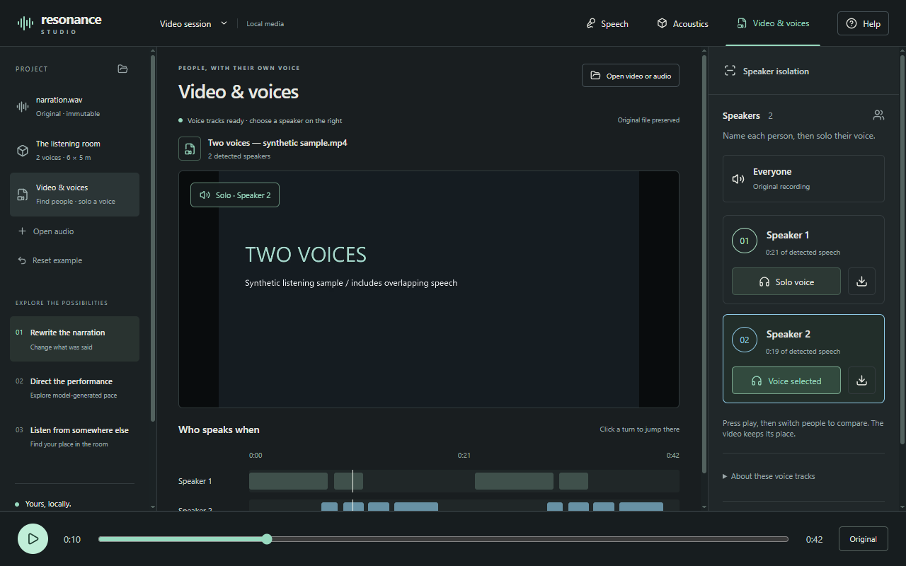

Resonance Studio
A local studio for speech, acoustics, and video. Find speakers in a recording, listen to one voice, and export individual tracks.

Software engineer. I’m building tools to separate voices, run agents on your own computer, and find ideas you’ve saved.
A local studio for speech, acoustics, and video. Find speakers in a recording, listen to one voice, and export individual tracks.

Run agents on your computer and call them through your own HTTPS relay, with access controls, remote approvals, and execution records.
A native Windows interface for document-oriented AI tasks. Review individual actions, inspect output documents, and reopen local task history.
A bookmark app that remembers what you forgot. Save sources and notes, search your archive, and rediscover older ideas with a reason to revisit them.
I studied mathematics and economics at Arizona State University and work on financial-services software. Outside work: these projects and CRPGs.
Get in touch about a project or something you’re building.